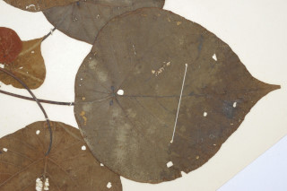
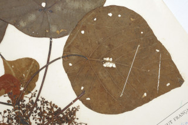
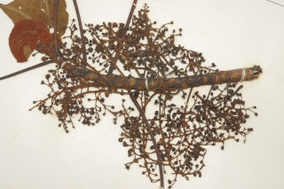
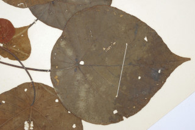
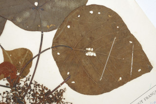
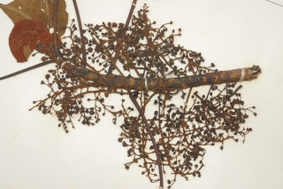

Images :
 





| Habit : | Trees 16 m tall. |
| Leaves : | Leaves simple , alternate , spiral ; stipules large, caducous ; petiole 5-31 cm long ; lamina 13.5-30 x 10.5-18.5 cm, peltate , orbicular-ovate , apex acuminate , base rounded , subcoriaceous , tawny pubescent and resinous yellow glands beneath; nerves 8-9, radiating from the centre. |
| Inflorescence / Flower : | Flowers unisexual , dioecious ; inflorescence panicle with zigzag branches , bracts linear with large flat glandular appendage; male flowers in clusters per bract ; female flowers few per bract . |
| Fruit and Seed : | Capsule , globose ; seed 1. |